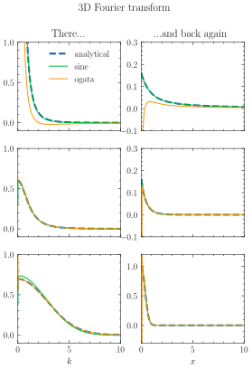

Note
Go to the end to download the full example code
Plot 3D Fourier Transform
This example compares the two implemented methods to perform the Fourier transform of a radially symmetric function, namely the sine and the hankel transform.

Time for sine: 0.0034s.
Time for ogata: 0.0045s. (1.3x sinetime).
Time for sine: 0.0025s.
Time for ogata: 0.0037s. (1.5x sinetime).
Time for sine: 0.1811s.
Time for ogata: 0.3427s. (1.9x sinetime).
from time import time
import jax.numpy as jnp
import jpu.numpy as jnpu
import matplotlib.pyplot as plt
import jaxrts.hypernetted_chain as hnc
from jaxrts import ureg
plt.style.use("science")
# If r_max gets too small, the sine inverse really starts to deviate!
r = jnp.linspace(0.001, 1000, 2**14) * ureg.angstrom
dr = r[1] - r[0]
dk = jnp.pi / (len(r) * dr)
k = jnp.pi / r[-1] + jnp.arange(len(r)) * dk
alpha = 2 / ureg.angstrom
kappa = 1.2 / ureg.angstrom
q = ureg.elementary_charge**2
fig, ax = plt.subplots(3, 2, figsize=(4.5, 6), sharex=True)
V_r1 = q**2 / (4 * jnp.pi * ureg.epsilon_0 * r) * (1 - jnpu.exp(-alpha * r))
V_k1 = q**2 / (k**2 * ureg.epsilon_0) * alpha**2 / (k**2 + alpha**2)
V_r2 = (
q**2
/ (4 * jnp.pi * ureg.epsilon_0 * r)
* jnpu.exp(-kappa * r)
* (1 - jnpu.exp(-alpha * r))
)
V_k2 = (
q**2
/ (k**2 * ureg.epsilon_0)
* k**2
* (alpha**2 + 2 * alpha * kappa)
/ ((k**2 + kappa**2) * (k**2 + (kappa + alpha) ** 2))
)
V_r3 = jnpu.exp(-(r**2) * alpha**2)
V_k3 = jnpu.sqrt(jnp.pi / alpha**2) ** 3 * jnpu.exp(-(k**2) / (4 * alpha**2))
settings = [
(V_r1, V_k1, ax[0, :]),
(V_r2, V_k2, ax[1, :]),
(V_r3, V_k3, ax[2, :]),
]
# Compile everything, once, to that the time measurement is fine
V_k_sine = hnc._3Dfour_sine(k, r, V_r1[jnp.newaxis, jnp.newaxis, :])
V_k_ogata = hnc._3Dfour_ogata(k, r, V_r1[jnp.newaxis, jnp.newaxis, :])
for setting in settings:
V_r = setting[0]
V_k = setting[1]
axis = setting[2]
t0 = time()
V_k_sine = hnc._3Dfour_sine(k, r, V_r[jnp.newaxis, jnp.newaxis, :])
sinetime = time() - t0
print(f"Time for sine: {sinetime:.4f}s.")
t0 = time()
V_k_ogata = hnc._3Dfour_ogata(k, r, V_r[jnp.newaxis, jnp.newaxis, :])
ogatatime = time() - t0
print(
f"Time for ogata: {ogatatime:.4f}s. ({ogatatime / sinetime:.1f}x sinetime)." # noqa: 501
)
# Do the back transform
V_r_sine_back = 1 / (2 * jnp.pi) ** 3 * hnc._3Dfour_sine(r, k, V_k_sine)
V_r_ogata_back = 1 / (2 * jnp.pi) ** 3 * hnc._3Dfour_ogata(r, k, V_k_ogata)
unit = V_k.units
axis[0].plot(
k.m_as(1 / ureg.angstrom),
V_k.m_as(unit),
label="analytical",
lw=2,
ls="dashed",
)
axis[1].plot(
r.m_as(ureg.angstrom),
V_r.m_as(unit / (1 * ureg.angstrom**3)),
label="analytical",
lw=2,
ls="dashed",
)
axis[0].plot(
k.m_as(1 / ureg.angstrom),
V_k_sine[0, 0, :].m_as(unit),
label="sine",
)
axis[1].plot(
r.m_as(ureg.angstrom),
V_r_sine_back[0, 0, :].m_as(unit / (1 * ureg.angstrom**3)),
label="sine",
)
axis[0].plot(
k.m_as(1 / ureg.angstrom),
V_k_ogata[0, 0, :].m_as(unit),
label="ogata",
)
axis[1].plot(
r.m_as(ureg.angstrom),
V_r_ogata_back[0, 0, :].m_as(unit / (1 * ureg.angstrom**3)),
label="ogata",
)
axis[0].set_xlim(0, 10)
axis[0].set_ylim(-0.1, 1.0)
axis[1].set_ylim(-0.1, 0.3)
ax[0, 0].legend()
ax[-1, 0].set_xlabel("$k$")
ax[-1, 1].set_xlabel("$x$")
ax[-1, 1].set_ylim(-0.3, 1.2)
ax[0, 0].set_title("There...")
ax[0, 1].set_title("...and back again")
fig.suptitle("3D Fourier transform")
plt.show()
Total running time of the script: (0 minutes 6.849 seconds)